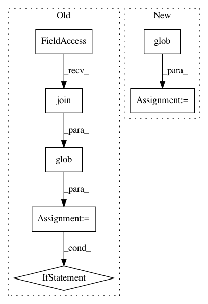

c6414c2a14cdf74addceeafeea55ee782e8cd391,main.py,,get_best_checkpoint_path,#Any#Any#Any#,266
Before Change
checkpoint = []
if phase == "target_train":
assert task_name is not None, "Specify a task checkpoint to evaluate from."
checkpoint = glob.glob(
os.path.join(run_dir, task_name, "model_state_%s_epoch_*.best.th" % phase)
)
if len(checkpoint) == 0:
checkpoint = glob.glob(os.path.join(run_dir, "model_state_untrained_pre_target_train.th"))
if len(checkpoint) == 0 and phase == "pretrain":
checkpoint = glob.glob(os.path.join(run_dir, "model_state_pretrain_epoch_*.best.th"))
if len(checkpoint) > 0:
assert_for_log(len(checkpoint) == 1, "Too many best checkpoints. Something is wrong.")
After Change
checkpoint = []
if phase == "target_train":
if args.load_target_train_checkpoint not in ("none", ""):
checkpoint = glob.glob(args.load_target_train_checkpoint)
assert len(checkpoint) > 0, (
"Specified load_target_train_checkpoint not found: %r"
% args.load_target_train_checkpoint
)
In pattern: SUPERPATTERN
Frequency: 3
Non-data size: 7
Instances
Project Name: jsalt18-sentence-repl/jiant
Commit Name: c6414c2a14cdf74addceeafeea55ee782e8cd391
Time: 2019-06-27
Author: yp913@nyu.edu
File Name: main.py
Class Name:
Method Name: get_best_checkpoint_path
Project Name: snipsco/snips-nlu
Commit Name: c31afbb3c7523e111bb13f16afb2cb98d3ffe424
Time: 2018-06-15
Author: adrien.ball@snips.net
File Name: snips_nlu/resources.py
Class Name:
Method Name: _load_verbs_lexemes
Project Name: snipsco/snips-nlu
Commit Name: c31afbb3c7523e111bb13f16afb2cb98d3ffe424
Time: 2018-06-15
Author: adrien.ball@snips.net
File Name: snips_nlu/resources.py
Class Name:
Method Name: _load_words_inflections